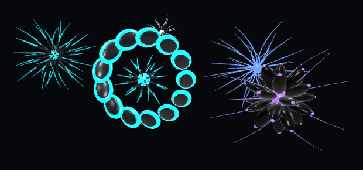

Realidad aumentada · iPhone
ORBES

Abrir en AR- 01Apunta al piso y mueve el celular despacio hasta que la escena se fije.
- 02Camina entre los orbes. Quedan anclados en su sitio, a la altura de la vista, a 1–4 m de donde los colocas.
- 03Sube el volumen. Cada orbe tiene su propio tono y suena más fuerte cuando te acercas.
- 04Graba con la grabación de pantalla del Centro de control (mantén pulsado el botón para activar el micrófono).